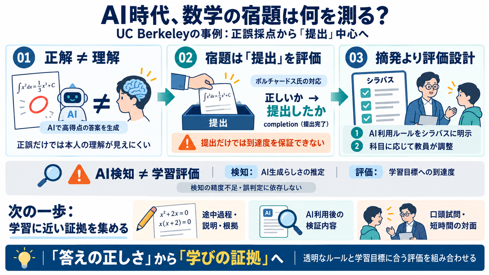

AI use leads UC Berkeley math professor to see ‘no point’ in grading homework | Academics | dailycal.org
Borcherds revealed this in a sit-down interview Tuesday, following OpenAI’s announcement that AI agents apparently solve…

Borcherds revealed this in a sit-down interview Tuesday, following OpenAI’s announcement that AI agents apparently solve…
A UC Berkeley mathematics professor has stopped grading his students’ homework for correctness, saying there’s little po…
“There have been plenty of technical breakthroughs in the past — hand weaving was put out of business by looms, and hors…
Borcherds said he currently grades on completion if a student hands in their homework. He admitted that it is "not a ver…
Photo: Getty A prominent mathematician at the University of California, Berkeley, has stopped grading homework after co…